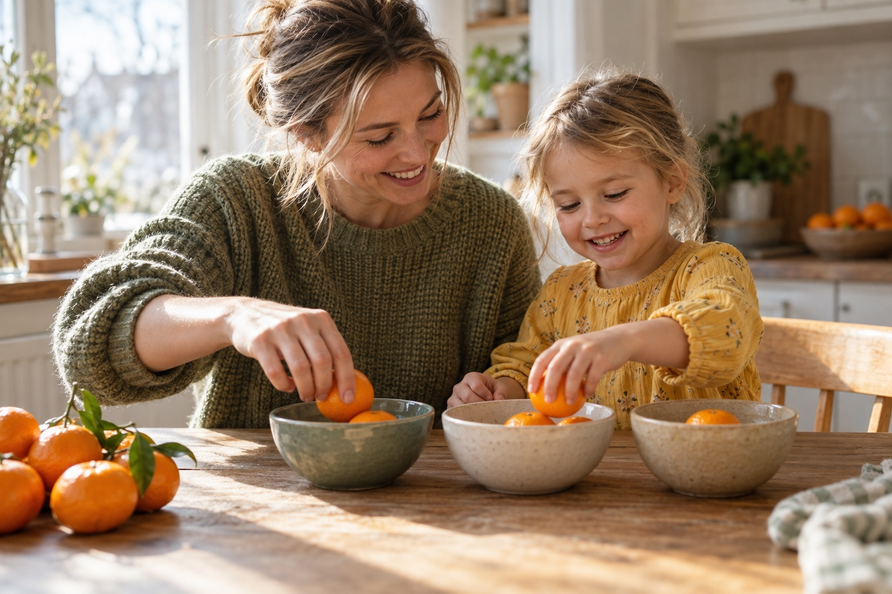

SMÅ UPPTÄCKTER. STORA MÖJLIGHETER.
Matte börjar
inte med läxan.
Den börjar
i leken.
Upptäck skärmfria mattelekar för barn 2–8 år, med saker ni redan har hemma. Widas Mattekasse ger er enkla idéer till korta stunder av lek och nyfikenhet tillsammans.

Mycket aha!
BARNENS FRAMTID BÖRJAR I DAG
Mer lek nu.
Mindre stress kring läxor och betyg senare.
AI gör färdiga svar tillgängliga på sekunder och koncentrationssvårigheter kan göra det svårare att hålla fokus. Därför är det extra viktigt att tidigt bygga upp och värna barnets eget tänkande.
Målet med Widas är att göra lärandet roligt och lätt, som en lek. Allt börjar med en stabil grund för en lättare skolgång. I korta lekfulla stunder får barnet förstå, pröva idéer och resonera. Forskning visar samband mellan tidiga matematiska kunskaper och senare skolresultat (läs studien).
EN LITEN HJÄLP I FICKAN
Mindre scroll.
Mer golvlek.
Appen är till för dig. Leken är till för er båda. Hitta veckans idéer, spara favoriterna i leklådan och följ det ni har utforskat tillsammans.
- En personlig veckokasse
- Tydliga steg och enkla variationer
- Favoritlekar att återvända till
- Upptäckter utan prov eller jämförelser
EN VECKA AV UPPTÄCKTER
Hej, nyfiken!
Vad leker vi idag?
Rättvist på
fruktfesten
Kan alla få lika många?
Strumpornas
hemliga mönster
Kasse♡
Leklåda○
Profil
Rättvist på
fruktfesten
5–10 min · Hemma
Det här behöver ni
6 mandariner
3 skålar och lite nyfikenhet
Så leker ni
Ge en mandarin i taget till varje skål. Hur vet vi att alla har fått lika många?
EN LITEN LEK. FLERA STORA UPPTÄCKTER.
Vem får den
sista mandarinen?
Prova en fruktfest vid köksbordet. Ms Wida visar vad som
gömmer sig bakom en till synes enkel lek.
Plocka fram: 6 mandariner och 3 skålar.
En vuxen är med under hela leken.
1 Bjud in till fruktfest +
Ställ fram tre skålar. ”De här gästerna vill ha lika många mandariner. Hur kan vi hjälpa dem?” Låt barnet föreslå ett sätt.
Wida förklararBerättelsen ger räknandet ett syfte. När barnet får komma med en egen idé får det öva på att planera och pröva en strategi.
2 Dela, en i taget +
Låt barnet lägga en mandarin i varje skål och fortsätta ett varv till. Räkna tillsammans medan barnet pekar på varje frukt.
Wida förklararEtt räkneord för varje sak gör kopplingen mellan ord och antal konkret. Att dela i turordning ger barnet ett sätt att skapa lika stora grupper.
3 Hur vet vi att det är lika? +
Fråga hur barnet kan kontrollera fördelningen. Lägg sedan till en sjunde mandarin: ”Vad händer nu?” Lyssna på förslagen, utan att skynda till ett rätt svar.
Wida förklararAtt jämföra grupper och förklara sin tanke ger utrymme för matematiskt resonemang. Den extra mandarinen öppnar för fler lösningar — kanske får den vänta till nästa fest?
Gör det enklare med fyra frukter och två skålar. Mer utmaning? Testa nio frukter och tre skålar. Avsluta när leken känns färdig.
EN LITEN HJÄLP FÖR DIG SOM VILL GÖRA MER
Superförälder-känsla.
Lätt som en lek.
Du vill gärna vara den kreativa föräldern med en rolig idé redo. Men vardagen kräver redan mycket. Widas förbereder leken åt dig, så att du kan vara närvarande i stället för att planera.
- Färdiga aktiviteter som går snabbt att förstå
- Vanliga material och tydliga steg
- Frågor som bjuder in till barnets egna tankar
- Enklare och svårare varianter när ni vill fortsätta
- Lekar för alla tillfällen efter era behov
- Pedagogiskt granskat av Ms Wida
- Stärkande kvalitetstid utan skärm
- Alltid en genomtänk lek redo för varje tillfälle
PEDAGOGEN BAKOM MATTEKASSEN
Lite mer nyfikenhet.
Lite mindre rätt och fel.
Ms Wida kommer från Indonesien och har arbetat många år i grundskola och förskola på internationell skola. Där har hon sett hur tidiga möten med siffror, mönster och problemlösning kan ta plats i barns vardag.
Hon uppskattar också den svenska förskolans tilltro till lek, kreativitet och barns egna initiativ. Widas Mattekasse förenar de perspektiven: tydliga matematiska idéer, upptäckta genom lek och relationer.
Det är otroligt fint att se ett barn lära sig ett nytt begrepp – när något som nyss var svårt plötsligt faller på plats. Som förälder är du alltid ditt barns bästa lärare. Du känner ditt barn bäst och kan följa dess nyfikenhet i sin egen takt.
”Barn ska få utmanas och lära sig, utan att känna att de sitter med läxor.”
Ms Wida Idén bakom Widas Mattekasse
GÖR PLATS FÖR ETT LITET AHA
Matte som får
plats i vardagen.
Ge nyfikenheten en chans att flytta in i vardagen.
0 kr / månad
Passa på – appen är gratis just nu under begränsad tid.
- 3–5 lekar per vecka utefter barnets intressen och dina förutsättningar
- Pedagogiskt utformade lekar som smyger in matte och logiskt tänkande
- Lekarna följer barnets utveckling och utforskar nya områden
NÄSTA UPPTÄCKT FINNS NÄRA
En liten app.
En hel värld att upptäcka.
Låt nästa ”vad ska vi hitta på?” bli början på något roligt.
Butikslänkar publiceras när appen finns tillgänglig.